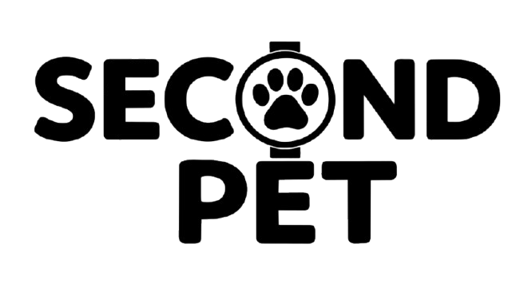

In most watches, the second hand is just a ticking line. At Second Pet, it's the heart of the design.
We created a custom-made second hand with a small ball at the end. Once every minute, as the hand sweeps the dial, the ball aligns perfectly with the dog's mouth. Whether it's a Dachshund or a Corgi, the dog finally "catches" the ball.
Independent production run. 40.9mm unisex case. Minimalist brushed dial. Soft silicone strap. Shipped from Poznań, Poland.
Coming to Etsy in April 2026Hi, I'm Jakub. Second Pet is a solo project born in Poznań from a love for thoughtful, minimalist objects and a life shared with a Corgi.
I’ve always been drawn to watches that act as conversation starters—designs that don't just tell time but offer a moment of "quiet joy." It’s that small, private smile you get when you’re in a boring meeting or commuting, and you notice your pet catching its ball on your wrist.
This isn't a corporate venture. It's a personal experiment in design and novelty. Every detail, from the custom-weighted second hand to the minimalist dial, was developed slowly and intentionally.
I’m starting with this very first production run to see if others appreciate these small rituals as much as I do. No mass production, no shortcuts—just an independent project sent directly from my home to yours.